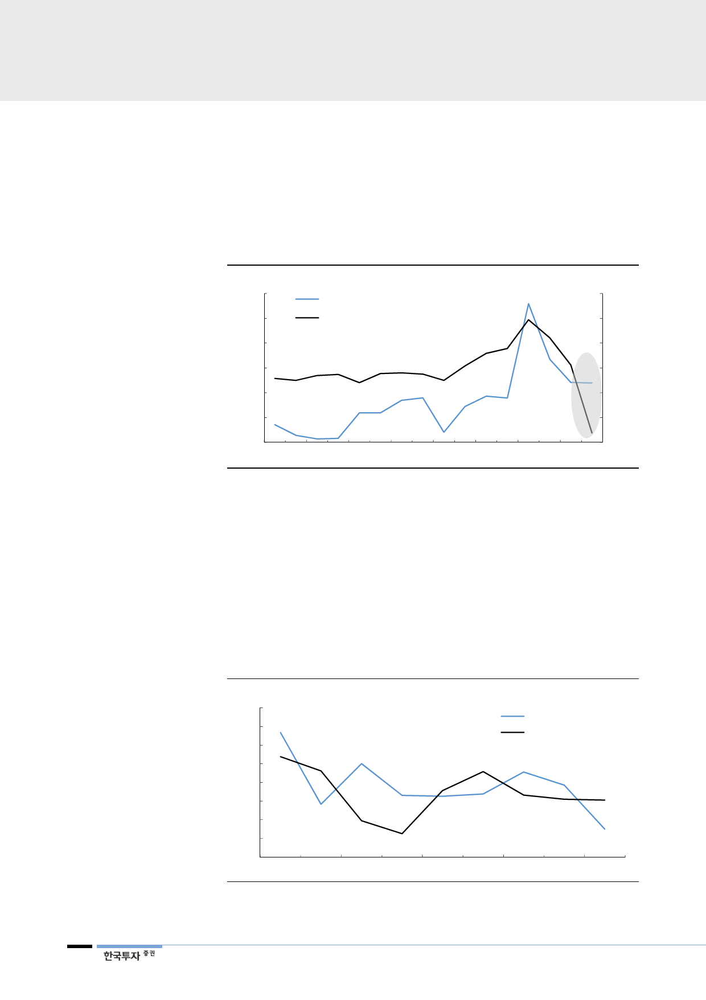

4Q18 매크로 충격에서
벗어나는 중
2017~2018년 과잉투자
영향으로 인한 가동률
저하에서도
서서히 벗어날 듯
게다가 지난 4분기 서버디램의 전년대비 수요 증가율은 -13%로 2009년 3분기
이후 10년 만에 처음으로 역성장했다. 그만큼 외부 매크로 충격이 심하게 작용했
다고 할 수 있다. PC, 스마트폰과 달리 최종 수요자가 기업인 점도 매크로의 충격
이 더 강하게 작용한 요인일 것이다. 하지만 매크로 충격에서 벗어나면 기업들의
설비투자 심리가 회복되면서 서버디램 수요회복으로 이어질 것이다.
[그림 18] 주요 hyperscaler 설비투자 증가율 vs. 서버디램 수요 증가율
(% YoY)
120
100
주요 클라우드 컴퓨팅 서비스업체 설비투자 증가율(좌)
서버디램 수요 증가율(우)
(% YoY)
100
80
80
60
60
40
40
20
20
0
0
(20)
1Q15 3Q15 1Q16 3Q16 1Q17 3Q17 1Q18 3Q18
자료: Bloomberg, 한국투자증권
2017년, 2018년 각각 46%, 39%의 높은 증가율을 보였던 서버디램 수요는
2019년 15%로 성장이 둔화될 전망이다. 2019년 과잉투자로 인한 데이터센터의
가동률 저하로 서버디램에 대한 설비투자가 둔화될 수밖에 없는 시기이다. 다만
과거 경험에 비추어보면 대략 1년이 지나면서부터 가동률 회복으로 인한 서버디
램 수요가 발생할 가능성이 높다. 시기적으로 서버디램 수요부진이 나타날 시기
는 2018년 4분기~2019년 3분기의 1년으로 예상하고 4분기부터는 수요회복이
나타날 전망이다.
[그림 19] 데이터센터 데이터트래픽 증가율 vs. 서버디램 수요 증가율
(% YoY)
80
70
60
50
40
30
20
10
0
2011
자료: CISCO, 한국투자증권
2013
2015
서버디램 수요 증가율
Data traffic 증가율
2017
2019F
10